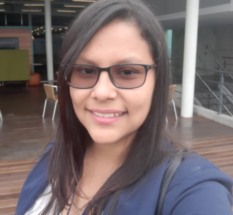

YERALDIH CAMARGO
Mi nombre es Yeraldith Camargo, mi profesión ingeniera industrial, con tecnología ADSI del SENA me apasionan las nuevas tecnologías
es por esto que me encuentro en formacion Front-End con Academia Geek, pues que quiero complementar mis conocimientos y poder unir estas dos pasiones.
Me encanta la lectura.

YULIANA ANDREA CLAVIJO ZULUAGA
Actualmente en formación de Front-End con Academia Geek (Makaia, Agile Innova, Comfama, Bancolombia y otras entidades).
¿Qué ES FRONT-END?
El desarrollo web Front-end consiste en la conversión de datos en una interfaz gráfica para que el usuario pueda
ver e interactuar con la información de forma digital usando HTML, CSS y JavaScript.
¿CUÁL ES MI MOTIVACION PARA APRENDER?
Mi interés surge cuando trabaje en cooperación con un programador en el cual yo diseñaba el contenido del sitio web
observaba lo que el realizaba.Mi motivación se debe a el apoyo y la meta que me trace de aprender Front End, sinceramente a veces es
difícil, pero soy feliz del conocimiento adquirido y de tener la oportunidad de conocer personas tan maravillosas.
UN POCO MAS SOBRE MI
Soy una amante de los Animales, (Todo animal que tenga pelo normalmente y alguno geckos.
Me encanta el arte en todas sus expresiones y soy una amateur en la fotografía de paisajes.
LUISA FERNANDA VILLA
Mi nombre es Luisa Fernanda Villa, Soy una persona autodidacta, apasionada por la informática
las nuevas tecnologías. Soy técnica en sistemas, tecnóloga en gestión de redes de datos
actualmente estudiante de desarrollo de software con énfasis en tecnología frontend.
Cuento con conocimiento básicos en lenguaje c# y JavaScript.
Poseo experiencia laboral durante 5 años brindando soporte técnico, escalamiento de
servicios y manejo de bases de datos de datos SQL y Oracle.
LAURA VARGAS SANCHEZ
Mi nombre es laura vargas tengo 21 años soy de Medellin-Antioquia
soy estudiante de desarrollo front end Acompañamiento de la Academia Geek,
Nuestra aliada Agile inonova Mi meta es aprender mucho sobre Front end
conocer muchas personas en este campo en la tecnologia.
Me gustan los video juegos la lluvia y pasear
DINA MARCELA REALES CORRALES
Soy developer web Full Stack, egresada de Acamica, estudiante de Bioingenieria de la universidad de Antioquia
Ingles en Lcn Idiomas, y refuerzo mis conocimientos en formación de Front-End con React en Academia Geek.
Me encanta viajar, aprender de nuevas culturas, y programar en el recorrido, pienso que cada día puedes sacar
una mejor versión de ti y disfrutar la vida al máxima haciendo lo que realmente te gusta.